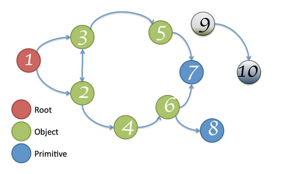
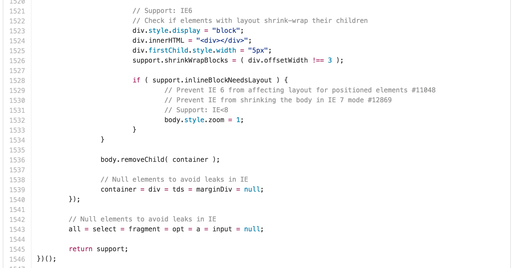

Siddhartha Bhagwan
@siddhartha_b
Freelance Web Developer
Huh? Memory What?
My code doesn't leak. Go away
Back in the day
Enter AJAX, SPAs, Mobiles
Priorities. Get yours right
Leaks are creepy
Do not kill Experience
Who let the leaks out
2001 called
They want their browswer issues back
Concept of 'reachability'
Mark & Sweep
To each his own
function outerFunction(){
var hugeString = 'Really BIG string here';
return function innerFunction(){
// this has access to hugeString even
// after its context ceases to exist
}
}
Leaky Closure I
var run = function () {
var str = new Array(1000000).join('*');
var doSomethingWithStr = function(){
if(str ===1){
// do something
}
};
doSomethingWithStr();
};
setInterval(run, 500);
Leaky Closure II
var run = function () {
var str = new Array(1000000).join('*');
var logIt = function() {
// do something
};
setInterval(logIt, 100);
};
setInterval(run, 500);
Leaky Closure III
var run = function () {
var str = new Array(1000000).join('*');
var doSomethingWithStr = function(){
If (str === '1'){
console.log("do something with str");
}
}
doSomethingWithStr();
var logIt = function() {
console.log('interval');
};
setInterval(logIt, 100);
};
setInterval(run, 500);
test/data/jquery-1.9.1.js
WhateverJs
Can my code be 100% leak free?
Quality of Code
Thought process behind execution
Not to be confused with Memory Optimization!
Know your tools
Unbind listeners
Closures – use cases
Measure. Understand. Fix. Repeat.
Case Studies
Thank you!